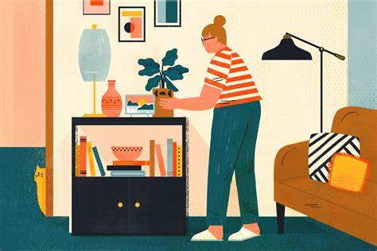

People's moods are very closely related to their living space.
If a person happens to be in a messy environment when his mood is low, it is definitely worse. On the contrary, a clean and tidy house will greatly help to improve the mood.
Therefore, when you are in a bad mood, it is a good choice to clean up the house.
Washing clothes, wiping glass, tidying up books, throwing away debris are all decompression behaviors. When it is finished, facing a completely new house, it will naturally give birth to a sense of accomplishment, which makes people feel refreshed and their mood will reach a beautiful state.
To clean up the house, it is to pack a good mood for yourself.